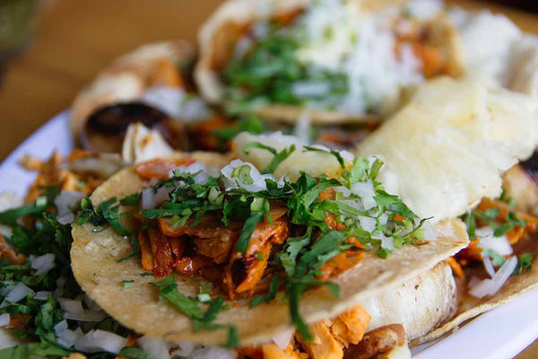
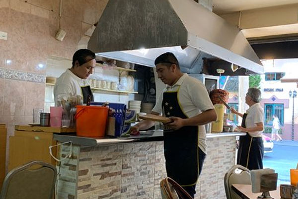

Where to Eat Near Polanco: 12 Restaurants the Guides Don't Mention
After every check-in, guests ask me the same thing: where should we eat? Not the Michelin places — they can find those on their own. They want to know where I eat. Where the food is extraordinary and the prices don't assume you flew in from abroad.
So here they are. Twelve places near Polanco and Anzures that I go to regularly, organized not by cuisine but by the kind of meal you're looking for. Some have no sign. Some have no menu. All of them have fed me well for years.
Street Food and Casual: Under $5 USD
The corner taquería with no name
There's a taco stand three blocks from our front door that has no sign, no website, and no Instagram. It's a metal cart with a plancha, a man who has been flipping tortillas since before I moved to this neighborhood, and a salsa verde that I have quietly tried to reverse-engineer at home and failed every single time.
Go between 8 and 10pm, when the suadero has had time to crisp at the edges. Order four tacos — suadero, longaniza, campechano, and one al pastor — and a glass of the jamaica agua fresca. The total will be around $3 USD. You will stand on the sidewalk eating them, and you will understand why people move to this city.
Taquería Selene

Tacos al pastor at Taquería Selene — legendary in Anzures since 1968
If there's one taquería I send every single guest to, it's Taquería Selene on Leibnitz 51 — just a few blocks from Casa Caravana. They've been here since 1968. Their al pastor is legendary in the neighborhood, and the gringa Selene (pastor with melted cheese between flour tortillas) has been drawing locals for decades. No frills, just perfect tacos. Go hungry, order the gringa and a couple of pastor tacos, and you'll see why the line never stops.

The counter at Selene — the trompo is always spinning
The bakery where I get my conchas every morning
Every neighborhood in Mexico City has a panadería, but not every panadería is worth waking up for. This one is. It's a family operation — the daughter works the counter, the father bakes in the back, and the conchas come out of the oven at 7am sharp. Get there at 7:15 for the best selection. The chocolate concha is perfect: slightly sweet, buttery, still warm. A concha and a coffee costs less than $2 USD.
I've been going here almost every morning for three years. The daughter now starts making my coffee when she sees me walk in. That kind of thing doesn't happen in Polanco.
The market comida corrida
Inside the neighborhood market, there's a row of food stalls where workers come for lunch. Pick the one with the longest line of people wearing office clothes — they've already done the quality research for you. For $4 USD, you'll get a soup, a rice plate, a main course (the mole is always the right choice on Thursdays), a drink, and sometimes a small dessert. It's home cooking at its most honest, served on plastic plates with a generosity that still surprises me.
Everyday Great: $10-25 USD
The corner bistro that shouldn't work
There's a tiny restaurant on a residential street — maybe eight tables — run by a chef who left one of Polanco's most celebrated kitchens to do his own thing. The menu changes daily based on what he finds at the market that morning. There's no printed menu; the waiter tells you what's available. It sounds precious, but it's not — it's just a guy who loves cooking and doesn't want to make the same thing twice.
Last week it was a duck confit taco with habanero honey and pickled onions. The week before, a ceviche with mango and serrano that made me close my eyes. Dinner for two with wine comes to about $45 USD, and you'll leave feeling like you got away with something.
The Japanese-Mexican place everyone walks past
From the outside, it looks like nothing. A glass door, a small sign in kanji, and zero indication that inside is one of the most interesting kitchens in the neighborhood. The chef is second-generation Japanese-Mexican, and the food reflects both traditions without being gimmicky about it. The tuna tostada is the dish that hooked me — seared tuna on a crispy tortilla with soy-chipotle sauce and avocado.
Go for lunch. It's quieter, cheaper, and the chef sometimes comes out to talk about what he's working on. A lunch set is around $15 USD and worth every peso.
The pasta place with the courtyard
An Italian restaurant in Mexico City shouldn't be on this list, but this one earns its spot. It's in a converted house with a courtyard where bougainvillea drapes over the walls, and the pasta is made fresh every morning. The cacio e pepe is textbook. The burrata salad uses heirloom tomatoes from a farm in Xochimilco. A pasta and a glass of wine runs about $18 USD, and the courtyard makes it feel like you're eating in someone's garden in Trastevere.
Special Occasion: $40-80 USD per person
The mezcal bar that seats twelve
This isn't technically a restaurant, but they serve food, and it belongs on this list. Twelve seats at a wooden bar. A mezcalero who has been studying agave spirits for twenty years and will guide you through a tasting that will permanently ruin your tolerance for bad mezcal. They pair each pour with a small bite — chapulines with guacamole, aged cheese with honey, dark chocolate with sal de gusano.
There's no reservation system. You show up, and if there's a seat, you sit. If there isn't, you come back another night. It's worth the effort. Budget about $50 USD per person for a full tasting with food.
The rooftop nobody photographs
Everyone knows the famous rooftop restaurants in Polanco. This isn't one of them. It's on the top floor of what used to be an apartment building, with views of the city skyline that rival anything on Instagram, but without the $30 cocktails and the two-hour wait. The menu is contemporary Mexican — think mole negro with duck, or a grilled octopus with black garlic — and the cocktail list leans heavily on seasonal fruits you've never heard of.
Go on a Thursday. Weekends get crowded with people who've discovered it. A dinner with cocktails runs about $60 USD per person.
The garden restaurant for long lunches
Some meals aren't about the food, even though the food is exceptional. This place is about the three-hour Saturday lunch: a garden shaded by old trees, a menu that encourages sharing, and a wine list curated by someone who clearly spends their vacations in small European vineyards. Order the lamb barbacoa for the table, a few salads to start, and let the afternoon unfold. You'll spend $70-80 USD per person, and you won't regret a single peso.

Street food in the neighborhood — the best meals often come from the smallest kitchens
If You Only Have One Dinner: The Splurge
The chef's table in a colonial house
If you have one evening and you want it to be unforgettable, this is where I'd send you. It's a tasting menu served in a restored colonial house with a courtyard, candles, and a chef who trained in Copenhagen and came home to cook with Mexican ingredients. The menu changes seasonally, but expect seven to nine courses that move from delicate (a corn silk broth that tastes like the earth) to bold (a mole with 32 ingredients that takes three days to make).
It's $120 USD per person with wine pairings, and you need to book at least a week in advance. But it's the kind of meal where you stop talking between courses because you're too busy paying attention.
The omakase with the hidden entrance
Behind an unmarked door on an otherwise ordinary street, there's a twelve-seat sushi counter run by a Japanese chef who sources fish from both the Pacific and Gulf coasts of Mexico. The omakase is fifteen courses of whatever arrived fresh that morning — yellowtail from Baja, octopus from Campeche, sea urchin that dissolves on your tongue. Each piece is placed directly on the counter in front of you, and the chef explains what you're eating in a quiet voice that makes you lean in.
It's around $100 USD per person, and reservations fill up weeks in advance. Worth the planning.
The wood-fire place with the open kitchen
Everything here is cooked over wood fire — and I mean everything. The bread, the vegetables, the fish, the meat, even the dessert. The kitchen is open, and watching the cooks work the fire is half the experience. The menu is short and changes based on what's in season: grilled bone marrow with tortillas, fire-roasted cauliflower with tahini, dry-aged ribeye that could make you weep.
Go with someone you love. Order the bone marrow to start and the ribeye to finish. Share a bottle of something from Valle de Guadalupe. Expect to spend $90-110 USD per person, and expect to book your next visit before you leave.
"Mariana's restaurant list was worth the stay on its own. We ate like locals for a week and discovered places we never would have found."
That review still makes me smile. Because that's the whole point — not just giving you a list, but giving you my list. The places where the food tells you something about this city that a guidebook can't.

Planning a trip to Mexico City?
Casa Caravana has 4 boutique residences in Anzures, a 5-minute walk from Polanco. Every guest receives a personalized restaurant guide from Mariana.
Explore Our Residences